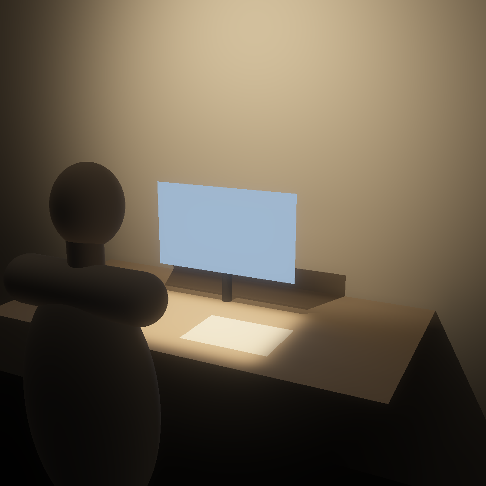

6◆ prøvde før valet 18.11
18skal
14bør
2kan
| Skal | Bør | Kan |
|---|---|---|
| Estetiske og semantiske | ||
E1 heimleg, ikkje teknisk E2◆ speglar Northern E3 forklarar bruken | E4 ny tolking | E5 leiken handling |
| Ergonomiske og funksjonelle | ||
F1◆ låg blending F2◆ saumlaus overgang F3◆ jamt arbeidslys ved skjermen F4 varmt lys F8 flyttbar med éi hand | F5 låg luminans F6 dempa kontrast rundt skjermen F7 trinnlaus demping F9 liten bordplass F10 mjukt ansiktslys F11 varmare ved demping | |
| Tekniske | ||
T1 flimrar ikkje T2 veltar ikkje T3 arbeidslys 8 t på leidning T4 naturlege fargar T8 trygg å handtere | T6 utan dyre verktøy T7 stemningslys utan leidning | T5 arbeidslys utan leidning |
| Marknadsøkonomiske | ||
M1◆ passar sortimentet M2 reservedelar | M3 prisnivået til Northern | |
| Berekraftsmessige | ||
B1◆ eigaren byter slitedelar B2 reine materialfraksjonar B3 lyser utan batteri | B4 materialmerkte delar B5 lite straum avslått B6 dokumentert klimaavtrykk B7 ny lysmodul seinare | |
Krava er eigenskapar, ikkje løysingar. Måla står i biletet der dei gjeld.